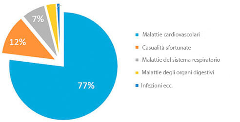
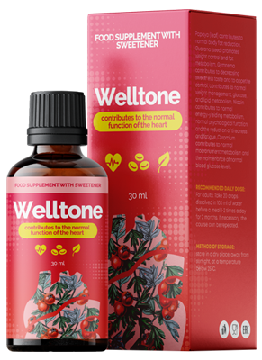

Statistica: Un cittadino su 3 oltre i 35 anni muore per malattie comportate dall’ipertensione!
M. Valentini:«Io personalmente 2020 invierò ai primi lettori questo preparato per l’ipertensione con lo sconto del 50%»

Noto cardiologo, organizzatore di convegni di scienze mediche, professore.
le malattie cardiovascolari sono i leader mondiali tra le malattie per il numero di vite che si portano via. Il 94% degli infarti e degli ictus avvengono proprio per via della pressione alta. Nell’ 89% l’ipertensione in caso di ictus o infarto ha conseguenze letali. Se poi vogliamo parlare di dati più concreti, L’ipertensione è la causa di circa il 77-78% delle morte cosiddette «naturali. In cifre assolute parliamo di 1,54 milioni di morti nel solo 2016.
“Cause di morte nel2016”
La cosa peggiore è che la maggior parte delle persone nemmeno sospetta di soffrire di ipertensione. Secondo i dati statistici il 67% di chi soffre di ipertensione non sa di essere malato. Il fatto è che gli sbalzi di pressione non vengono presi seriamente da nessuno, finché non si arriva ad una crisi ipertonica, quando la pressione semplicemente esplode. Sono poche le persone che portano l’attenzione ai mal di testa, ai giramenti di testa, alla debolezza, al viso gonfio, alla tachicardia, alla vista offuscata e al nervosismo. E questi sintomi sono un chiaro segno di un’ipertensione già cronica. Questo vuol dire che bisogna seriamente pensare di agire prima che sia troppo tardi!
Al giorno d’oggi esiste solo un preparato per l’ipertensione che agisce sulla causa della malattia e se si seguono le istruzioni libera completamente dall’ipertensione. E’ il preparato tedesco «». Il fatto è che il preparato «» ripristina completamente il tono dei vasi sanguigni grazie alla formula scientifica unica. Allo stesso modo il preparato abbassa il livello di colesterolo e stabilizza il ritmo cardiaco. E’ molto importante che «» non solo è efficace, ma è anche sicuro per la salute, perché è composto da soli componenti naturali. Per questo «» può essere assunto a qualsiasi età, senza aver paura degli effetti collaterali e delle complicazioni da parte di altri organi. L’efficacia e la sicurezza del preparato sono confermata dalla moltitudine di test a clinici a cui hanno preso parte più di 5000 persone.
Prima «» non era disponibile in tutta la nazione, nonostante le lunghe trattative con il produttore. Ma ora, finalmente, «» può essere acquistato nella nostra nazione.
E’ stato deciso di rimuovere ogni limite nell’importazione di ogni tipo di preparato contro l’ipertensione.
— Buon giorno dottor Valentini. Ci dica per favore, perché è stata presa questa decisione?
— Il nostro obbiettivo principale mettere al sicuro la salute della popolazione mondiale. E quindi se c’è un qualche problema il nostro scopo è risolverlo. Purtroppo dalla nostra nazione arriva una statistica preoccupante: più del 70% dei cittadini soffrono di ipertensione e quasi un terzo muore per problemi legati al sistema cardiovascolare. Siamo nettamente peggio rispetto agli standard europei.
— Sono cifre veramente paurose! CI racconti per favore come viene combattuto nel resto d’Europa il problema dell’ipertensione?
— Al giorno d’oggi in tutte le cliniche europee e nei centri di riabilitazione viene utilizzato il preparato innovativo «», messo a punto da studiosi tedeschi. La particolarità di «» sta nel fatto che non ha effetti collaterali e riporta in salute i vasi sanguigni a livello cellulare. Permette velocemente di stabilizzare la pressione e di non lasciar crescere le malattie del sistema cardiovascolare.
— Dottor Valentini, è vero che il preparato in questione è già disponibile?
— Si, è proprio questo quello che volevo dire parlando del fatto che ora si possono importare liberamente tutti i preparati collegati all’ipertensione. Questa decisione è già stata presa e confermata ai piani alti. Quando parliamo della salute delle persone non ci possono essere incomprensioni politiche.
— Ci racconti, come agisce «» sull’organismo?
— Secondo i risultati degli studi dell’Organizzazione Mondiale per la Salvaguardia della Salute il preparato «» ha i seguenti effetti:
- • riporta i vasi sanguigni ad un tono normale;
- • abbassa il livello di colesterolo;
- • stabilizza il ritmo cardiaco.
Al momento attuale possiamo consultare la seguente statistica:
- – in caso di utilizzo preventivo per le malattie cardiovascolari su soggetti più anziani dei 35 anni con l’aiuto del preparato «» è stata notata una stabilizzazione della pressione sanguigna nel 97% dei pazienti;
- – in caso di prescrizione di «» nel periodo riabilitativo dopo crisi di ipertensione acute, è stato notato un miglioramento della circolazione sanguigna nella zona cerebrale nell’ 86% dei casi.
—Dottor Valentini, la ringraziamo per questa intervista! E’ veramente una bellissima notizia per tutti i cittadini. Speriamo che finalmente sarà più facile combattere l’ipertensione e sarà così anche possibile alzare la speranza di vita medi degli italiani.
Commenti